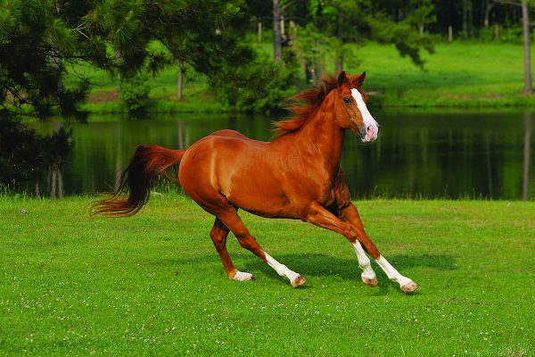
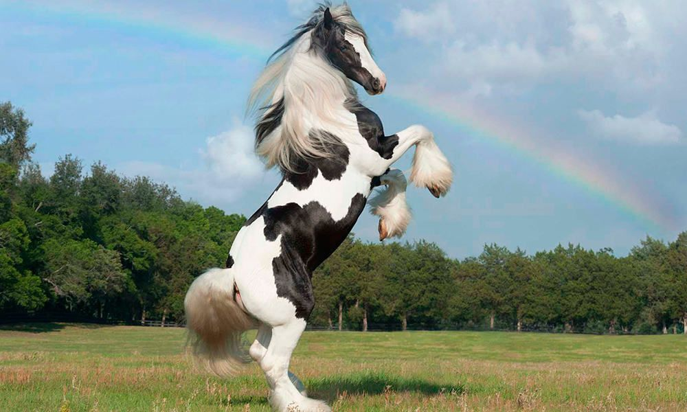
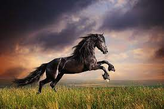

Our Products
American Quarter Horse
| Features | American Quarter Horse |
|---|---|
| Species | Equus caballus |
| Family | Equidae |
| Height | 14 to 16 hands (56 – 64 inches / 1.4 – 1.62 m) |
| Weight | 950 to 1,250 pounds (430 – 567 kg) |
| Temperament | Docile, gentle, and easy-going |
| Body type | Well-defined muscled body with powerful, rounded hindquarters and broad chest |
| Color | Red, sorrel, chestnut, brown, or black |
| Lifespan | 25 to 30 years |
| Diet | Hay, grass, and supplements |
| Care | Moderate level |
| Minimal stall dimensions | 12 by 12 feet (3.65 x 3.65 m) |
| Minimal pen size | 50 to 60 feet (15 – 18 m) |
| Compatibility | High |
| Price | $8000 |
Gypsy Horse
| Features | Gypsy Vanner |
|---|---|
| Species | Equus caballus |
| Family | Equidae |
| Height | Typically 14 to 15 hands (56 – 60 inches / 1.4 – 1.5 m) Can reach 17 hands (68 inches / 1.7 m) |
| Weight | 1,000 and 1,700 pounds (453.5 – 771 kg) |
| Temperament | Mild, docile, and intelligent |
| Color | Piebald, Skewbald, Tobiano, and Blagdon types |
| Lifespan | Thirty years |
| Diet | Hay |
| Care | Moderate |
| Minimal stall dimensions | 14 by 14 feet (4.25 x 4.25 m) |
| Stall set-up | Outdoor area and inside bedding |
| Compatibility | Both experienced owners and beginners |
| Price | $7500 |
Haflinger

| Features | Haflinger Horse |
|---|---|
| Species | Equus caballus |
| Family | Equidae |
| Height | 13 to 15 hands (52 – 60 inches / 1.32 – 1.5 m) |
| Weight | 800 to 1200 pounds (363 – 544 kg) |
| Temperament | Friendly, versatile, and intelligent |
| Color | Chestnut with flaxen mane and tail |
| Lifespan | 25 to 30 years |
| Diet | Hay, grass, and grains |
| Care | Moderate to high |
| Minimal stall dimensions | 12 by 12 feet (3.65 x 3.65 m) |
| Minimal pen size | 40 to 50 feet (12 – 15 m) |
| Compatibility | Great for families and beginner riders |
| Price | $9700 |
Friesian Horse
| Features | Friesian Horse |
|---|---|
| Species | Equus caballus |
| Family | Equidae |
| Height | Stallions: At least 15.3 hands (63 inches / 1.6 m) Mares and Geldings: 14.3 hands (60 inches / 1.5 m) Adult Total Height: Ideally 15.3 to 16 hands (63 – 64 inches / 1.6 – 1.62 m) |
| Weight | 1,300 to 1,450 pounds (590 – 658 kg) |
| Temperament | Mischievous, eager, playful, friendly, and loving |
| Body type | Sturdy and muscular build with arched neck and long, thick mane and tail |
| Color | Black |
| Lifespan | Sixteen years |
| Diet | Timothy hay, grass, supplements |
| Care | Advanced level |
| Minimal stall dimensions | 24 by 24 feet (7.3 x 7.3 m) |
| Stall set-up | Large bedding and at least 1 acre (0.4 ha) of pasture |
| Compatibility | Average |
| Price | $6580 |